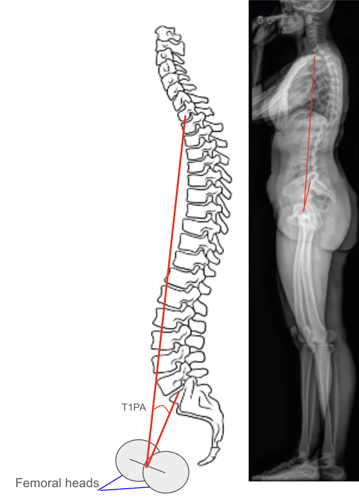

1) Description of Measurement
The T1 Pelvic Angle (T1PA) is a composite radiographic parameter that evaluates global sagittal alignment by incorporating both spinal inclination and pelvic retroversion into a single angular measure. It is defined as the angle between two lines: one drawn from the center of the T1 vertebral body to the center of the femoral heads, and the other from the center of the S1 endplate to the center of the femoral heads.
Unlike the Sagittal Vertical Axis (SVA), which is highly dependent on patient positioning, the T1PA provides a posture-independent assessment of sagittal alignment and is thus a more reliable marker for overall spinal balance. An increased T1PA corresponds to greater anterior spinal inclination and compensatory pelvic retroversion — key indicators of positive sagittal imbalance.
2) Instructions to Measure
3) Normal vs. Pathologic Ranges
Key Point:
T1PA > 20° is generally considered a clinically significant threshold for sagittal malalignment and correlates strongly with patient-reported disability (ODI > 40%).
4) Important References
Protopsaltis T, Schwab F, Bronsard N, et al; International Spine Study Group. TheT1 pelvic angle, a novel radiographic measure of global sagittal deformity, accounts for both spinal inclination and pelvic tilt and correlates with health-related quality of life. J Bone Joint Surg Am. 2014 Oct 1;96(19):1631-40. doi: 10.2106/JBJS.M.01459.
Lafage R, Schwab F, Challier V, et al; International Spine Study Group. Defining Spino-Pelvic Alignment Thresholds: Should Operative Goals in Adult Spinal Deformity Surgery Account for Age? Spine (Phila Pa 1976). 2016 Jan;41(1):62-8. doi: 10.1097/BRS.0000000000001171.
Schwab F, Lafage V, Boyce R, Skalli W, Farcy JP. Gravity line analysis in adult volunteers: age-related correlation with spinal parameters, pelvic parameters, and foot position. Spine (Phila Pa 1976). 2006 Dec 1;31(25):E959-67. doi: 10.1097/01.brs.0000248126.96737.0f.
Le Huec JC, Thompson W, Mohsinaly Y, et al. Sagittal balance of the spine. Eur Spine J. 2019 Sep;28(9):1889-1905. doi: 10.1007/s00586-019-06083-1. Epub 2019 Jul 22. Erratum in: Eur Spine J. 2019 Nov;28(11):2631. doi: 10.1007/s00586-019-06128-5.
5) Other info....
The T1 Pelvic Angle (T1PA) integrates both SVA (spinal inclination) and pelvic tilt (pelvic compensation), providing a more comprehensive and stable representation of sagittal balance.
It is less affected by patient posture or knee flexion, making it highly reliable for comparing pre- and postoperative images.
T1PA is particularly useful in adult spinal deformity surgery planning, as it correlates with functional outcomes and energy-efficient posture restoration.
It should be analyzed in conjunction with pelvic incidence (PI), lumbar lordosis (LL), and PI–LL mismatch to assess spinopelvic harmony.
In general, T1PA ≤ PI + 10° is considered an optimal surgical alignment target to maintain physiologic posture and improve quality of life.
Large T1PA values (>30°) indicate decompensation, often associated with fatigue, pain, and decreased quality of life.
EOS imaging or stitched low-dose long-cassette radiographs provide superior accuracy for T1PA measurement by minimizing projection error.